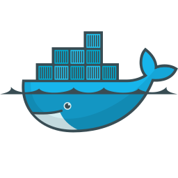
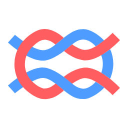

abstract. production architecture
AWS · us-east-1 EC2 c7i-flex.large · Ubuntu · 2 vCPU · 3.7 GB RAM + 4 GB swap

Docker Compose hardened containers · memory limitsAI providers through the LLM gateway
Managed data Neon · us-east-2
Sign-in and tracing
HTTPS
SSH deploy
static files
/api · SSE
tasks
prompts ·
embeddings
embeddings
SQL (RLS) ·
PDF files
PDF files
verify token ·
traces
traces
on failure
Readersbrowser · phone
GitHub ActionsCI · Deploy button
nginxTLS (Let's Encrypt)
security headers
security headers
Web appReact + Vite
prerendered landing
prerendered landing
APIFastAPI · streaming SSE
auth · policy · RLS
auth · policy · RLS
Redistask queue · rate limits
answer cache
answer cache
Worker: fastparse · index
summarize
summarize
Worker: backgroundreference lookups
file deletion
file deletion
OpenRouterfallback
PostgreSQL 18pgvector · full-text search
row-level security
row-level security
Object storageS3-compatible
PDFs · nightly backups
PDFs · nightly backups
ClerkGoogle · email · codes

Langfusetraces · tokens · cost